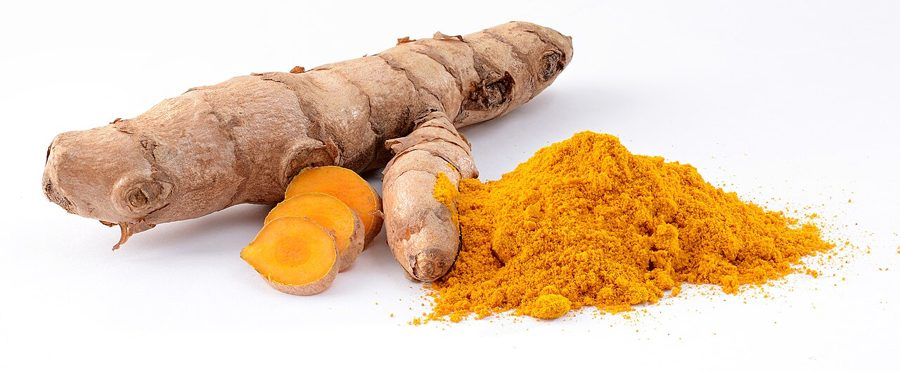

हल्दीTurmeric
Curcuma longa · Zingiberaceae · FLR-0175

- Scientific nameवैज्ञानिक नाम
- Curcuma longa L.
- Familyकुल
- Zingiberaceae
- Hindiहिंदी
- हल्दी
- Local namesस्थानीय नाम
- haldi, haldee, hardi, haradi, turmeric
- Status hereयहाँ की स्थिति
- cultivated
- Movementआवागमन
- Resident, here all year
- IUCNIUCN
- not evaluated
- Reviewसमीक्षा
- audited and independently read
When to look कब देखें
Expected mainly in May, June, July, August, September, October, November, December, January.मुख्यतः मई, जून, जुलाई, अगस्त, सितंबर, अक्टूबर, नवंबर, दिसंबर, जनवरी में अपेक्षित।
Uses and possibilities उपयोग और संभावनाएँ
“Traditional medicine” means a documented traditional use, not a claim that it works. Nothing on this page is medical advice.
Drawn from the documented uses in the profile below, where each is labelled traditional, current or a research lead. All uses →
हल्दी / Turmeric
Curcuma longa L. — Zingiberaceae
हल्दी (मंजल, हरिद्रा) — एक महत्वपूर्ण मसाला और औषध, जिसका प्रयोग भारतीय खान-पान, पूजा और दवाई में हज़ारों साल से होता है। पत्ते बड़ी-बड़ी, 60-70 सेंटीमीटर तक, हरे रंग की। फूल पीले-गुलाबी, लेकिन फूल से ज़्यादा महत्वपूर्ण है जड़ के नीचे का हिस्सा — पीला-नारंगी राइज़ोम (कंद), जिसे सुखाकर पाउडर बनाते हैं। यह पाउडर खाना बनाने में रंग और स्वाद के लिए डाला जाता है, और पूरे भारत के विवाह-पूजा में हल्दी का प्रयोग होता है।
Quick Identification त्वरित पहचान
| Feature | Description |
|---|---|
| Plant height | 60–90 cm, with large leaves |
| Leaves | Large, 60–70 cm long, 2–3 cm wide, lanceolate, with prominent midrib |
| Stem | Pseudostem made of leaf sheaths; underground rhizomes |
| Flowers | Pale yellow or pinkish, in dense spikes, 15–20 cm, fragrant |
| Rhizomes | Underground, yellow to orange, 4–7 cm long, aromatic |
| Roots | Fibrous, from nodes of the rhizome |
Field tip: A tall plant with large, lanceolate, deep green leaves with prominent midribs. The plant is entirely herbaceous above ground, with flowers in dense spikes. The economically important part is the underground yellow-orange rhizome.
Morphology आकारिकी
Biometrics (typical measurements for cultivated turmeric in northern India):
| Measurement | Range |
|---|---|
| Plant height | 60–90 cm |
| Leaf length | 60–70 cm |
| Leaf width | 1.5–3 cm |
| Flower spike length | 15–20 cm |
| Rhizome length | 4–7 cm |
| Rhizome diameter | 1.5–3 cm |
Root system: Fibrous roots emerge from nodes of the rhizome; the plant is shallow-rooted.
Rhizomes: Underground stems, yellow to orange, finger-like or nodular, 4–7 cm long, with aromatic essential oils and curcuminoids (the active golden pigments). Rhizomes branch to produce lateral "fingers." The stored rhizomes have a characteristic sharp, slightly bitter aroma.
Leaf sheaths: Form a pseudostem above ground, smooth, green.
Leaves: Alternate, lanceolate, 60–70 cm long, 1.5–3 cm wide, with a prominent midrib and secondary veins. The leaf surface is smooth; the margin is entire.
Inflorescence: A dense spike of flowers, 15–20 cm long, arising from the pseudostem apex or from leaf axils. The flowers are small, pale yellow or pinkish, fragrant, arranged in overlapping bracts. Flowers appear July–August.
Flower structure: The flowers have a tubular calyx and corolla, with typically 3 stamens and 1 pistil. Flowers are protogynous (pistil matures before stamens), promoting cross-pollination by bees, though sexual reproduction is rare in cultivation; most propagation is vegetative (rhizome division).
हिंदी: बड़ी पत्तियाँ, लंबी। फूल पीले-गुलाबी। लेकिन असली भाग जड़ के नीचे — पीला कंद।
Behaviour & Ecology व्यवहार और पारिस्थितिकी
A tropical ginger-family plant of South Asian origin, cultivated throughout tropical and subtropical regions for its rhizomes. Curcuma longa is a long-duration crop (8–10 months from planting to harvest). The plant requires warm temperatures (20–30°C), high humidity, and abundant rainfall or irrigation. The plant is sensitive to waterlogging and requires well-drained soils.
The crop is propagated vegetatively from rhizome pieces ("seed rhizomes"), not from botanical seeds. A planted rhizome piece develops roots, sends up new leaves, and produces a new branched rhizome system. Multiple rhizomes ("fingers") form from a single planted piece, increasing the yield over the growing season.
The plant is relatively pest-resistant and does not require pesticides in most systems. Traditional cultivation involves minimal inputs; the plant is well-suited to tropical agroforestry and homestead gardens.
हिंदी: गर्मी-नमी की खेती। आठ-दस महीने की फसल। कंद से नया पौधा उगता है। बहुत कम परेशानी।
Life Cycle / Phenology जीवन चक्र
| Month / Season | Event |
|---|---|
| May–July | Planting of rhizome pieces |
| June–July | Sprouting; leaf emergence |
| July–September | Vegetative growth; leaf expansion; rhizome enlargement |
| August–October | Continued rhizome development; flowering (July–August) |
| October–December | Rhizome maturation; leaf senescence |
| December–January | Harvesting of mature rhizomes |
From planting to harvest: 8–10 months. A single planted rhizome piece (4–5 g) yields 400–500 g of fresh rhizomes (with proper management and irrigation).
हिंदी: मई-जून में बीज (कंद), जुलाई-अगस्त में फूल, दिसंबर-जनवरी में खोद लेते हैं।
Associated Species / Interactions संबंधित प्रजातियाँ
- In agroforestry: Grown in the shade of fruit trees and in homestead gardens.
- Rotation: Follows rice-based crops; may be followed by winter vegetables.
- Related crops: Grown alongside ginger and other spice plants.
Pests and Diseases कीट और रोग
- Leaf spot: Colletotrichum gloeosporioides; causes dark spots on leaves; usually minor.
- Rhizome rot: Phytophthora and Pythium in waterlogged soils; prevent by ensuring good drainage.
- Mites: Occasionally feed on leaves; not usually serious.
- Generally hardy: Turmeric is relatively pest- and disease-resistant.
Agricultural / Human Relevance कृषि प्रासंगिकता
Culinary use: The dried rhizome, ground into a powder (turmeric powder or haldi powder), is one of the most essential spices in Indian cuisine. A pinch of turmeric is added to almost every curry for its color (golden-yellow), flavor (slightly bitter, warming), and antiseptic properties. The spice is also used to color and flavor rice dishes, dals, and vegetable preparations.
Sacred and ceremonial use: Turmeric is one of the most sacred and auspicious substances in Hindu, Buddhist, and other traditions. In Hindu wedding ceremonies, the bride and groom are anointed with turmeric paste in the haldi ceremony the day before the wedding, considered to purify and bless the couple. Turmeric is offered in temple worship (puja) as a sign of auspiciousness and protection. The vibrant golden-yellow color is associated with wealth, health, and divine blessing.
Dye use: Turmeric has been used as a natural dye for thousands of years to color textiles and manuscripts a golden-yellow shade. The curcumin pigment is bright and warm. The dye is not colorfast without a mordant; with specific mordants, it produces different shades. In traditional Indian textile arts, turmeric dye is still used.
Traditional medicine: In Ayurvedic medicine, turmeric has a recorded history of use spanning at least 4,000 years. Charaka Samhita and Sushruta Samhita, foundational Ayurvedic texts, describe turmeric as having warming (ushna), bitter (tikta), and pungent (katu) properties. It is traditionally used to treat inflammation, improve digestion, support liver function, heal wounds, and treat skin conditions. The root (rhizome) is used in herbal formulations (churnas, kwaths) and pastes. Turmeric is considered beneficial for the respiratory system and is often combined with ginger and honey in traditional remedies. Curcumin, the principal active compound in turmeric, has been the subject of extensive scientific research; however, no medical claims are made here beyond documenting the traditional use.
***Medical disclaimer: Turmeric is used in Ayurvedic medicine and traditional systems; it is not a replacement for professional medical care. Consult a qualified healthcare provider for diagnosis and treatment of medical conditions.*
Cultivation: Turmeric is grown on a small to medium scale by farmers in India and Southeast Asia. The crop is suited to tropical regions with adequate rainfall or irrigation. The rhizome pieces are planted by hand at 20 cm × 25 cm spacing. Harvesting is labor-intensive, requiring digging and collection of rhizomes, followed by boiling, drying, and polishing.
Common varieties: Landrace and improved varieties exist; notable varieties include Alleppey (Kerala), Madras (Tamil Nadu), Sangli (Maharashtra), and others, distinguished by rhizome size, color, and curcumin content.
हिंदी — रसोई: हर करी में हल्दी डाली जाती है। रंग, स्वाद, और जीवाणुरोधी गुण।
हिंदी — पूजा: शादी में हल्दी की रस्म। मंदिरों में हल्दी का प्रयोग। शुभता का प्रतीक।
हिंदी — रंग: पहले कपड़े पीले रंग से रंगते थे।
हिंदी — दवाई: आयुर्वेद में सूजन कम करने, पाचन बेहतर करने, घाव भरने के लिए काम लेते हैं।
Expected Locally स्थानीय रूप से अपेक्षित
Not a field record. Written from published accounts for eastern Uttar Pradesh. No confirmed local sighting yet — if you have seen it, that is what the atlas needs.
अभी तक स्थानीय पुष्टि नहीं। यह विवरण प्रकाशित स्रोतों से है, किसी अवलोकन से नहीं।
Turmeric is cultivated on a small scale in homestead gardens and specialty fields in warmer parts of eastern UP. The dried rhizome is sold in all local markets and grocery shops year-round as a spice. Fresh rhizomes may be available seasonally (December–January) in markets. Local knowledge of traditional uses in ceremonies and medicine would be valuable to record.
Distribution वितरण
Global range: Native to South Asia; now cultivated in tropical regions worldwide, with major production in India, Indonesia, and other Southeast Asian countries.
In India: Widely cultivated in tropical and subtropical regions; major production in Telangana, Karnataka, Maharashtra, and Tamil Nadu.
In Uttar Pradesh: Cultivated on a smaller scale in warmer and wetter districts; not a major commercial crop in the state.
In Basti district / eastern UP: Expected in homestead gardens and specialty cultivation in favorable micro-climates.
Research Questions शोध प्रश्न
Anyone can investigate these | कोई भी इन प्रश्नों की जाँच कर सकता है
- Where is turmeric cultivated in your area, and what is the local yield per plant? / आपके इलाके में कहाँ हल्दी उगती है? — Locate cultivation sites; measure rhizome yield.
- What is the traditional use of turmeric in haldi ceremonies in your region, and are there local variations? / आपके इलाके में हल्दी की रस्म कैसे की जाती है? — Interview community members; document ceremony details.
- Can turmeric be grown in a small home garden plot, and how much yield can be expected? — Grow a small patch; measure yield and time required.
- What are the traditional Ayurvedic preparations using turmeric in your area, and who makes them? / हल्दी से कौन-कौन से पारंपरिक नुस्ख़े बनते हैं? — Interview healers; document preparations.
- Can turmeric dye be extracted and used to dye cloth naturally? — Extract dye; test on fabric; document the process and color results.
Similar Species मिलती-जुलती प्रजातियाँ
| Species | How to tell apart | हिंदी |
|---|---|---|
| ginger (Zingiber officinale) | Similar plant; rhizome white or pale inside; paler, more pungent taste; different essential oils | अदरक — सफेद राइजोम, अलग स्वाद |
| Curcuma amada (Mango ginger) | Rhizome smells of mango; used less commonly; smaller rhizomes | आम की महक वाली हल्दी |
Field rule: A tall tropical herb with large, lanceolate, deep green leaves; dense spikes of pale yellow or pink flowers; and golden-yellow, aromatic rhizomes with curcuminoid pigments is turmeric.
Taxonomy & Classification वर्गीकरण
Original description. Described by Carl Linnaeus in 1753 from cultivated plants in India. The genus name Curcuma is from the Arabic kurkum or Persian korkum, meaning "saffron" (though turmeric and saffron are unrelated plants). The specific name longa means "long," referring to the elongate rhizomes.
Subspecies. Monotypic — no subspecies are currently recognised.
Family and order placement. Zingiberaceae, order Zingiberales. The family includes ginger, cardamom, and other aromatic rhizomatous herbs.
Phylogenetic notes. Curcuma longa is related to Curcuma amada (mango ginger) and other South Asian Curcuma species. The genus contains about 50 species, mostly in tropical Asia.
IUCN status rationale. Not evaluated. Widely cultivated; not assessed for conservation status.
Photo Gallery फोटो गैलरी
Photos needed आवश्यक फोटो
- [ ] Whole plant showing large leaves and flower spikes
- [ ] Close-up of inflorescence (flower spike)
- [ ] Harvested fresh rhizomes (whole and cut to show interior)
- [ ] Dried rhizome and turmeric powder
No photos yet — add field photos to media/species/turmeric/ and run node scripts/sync_photos.js.
References संदर्भ
- Linnaeus, C. (1753). Species Plantarum. Laurentii Salvii, Stockholm, Vol. 1, p. 8.
- Hooker, J.D. (1892). Flora of British India, Vol. 6. L. Reeve & Co., London.
- Kirtikar, K.R. & Basu, B.D. (1935). Indian Medicinal Plants, Vol. 2. Lalit Mohan Basu, Allahabad.
- Chopra, R.N., Nayar, S.L. & Chopra, I.C. (1956). Glossary of Indian Medicinal Plants. CSIR, New Delhi.
- Chadha, K.L. (2010). Handbook of Horticulture. Indian Council of Agricultural Research, New Delhi.
- GBIF Occurrence Data — Curcuma longa, India (2015–2026).
Source file: species/flora/crops/turmeric.md